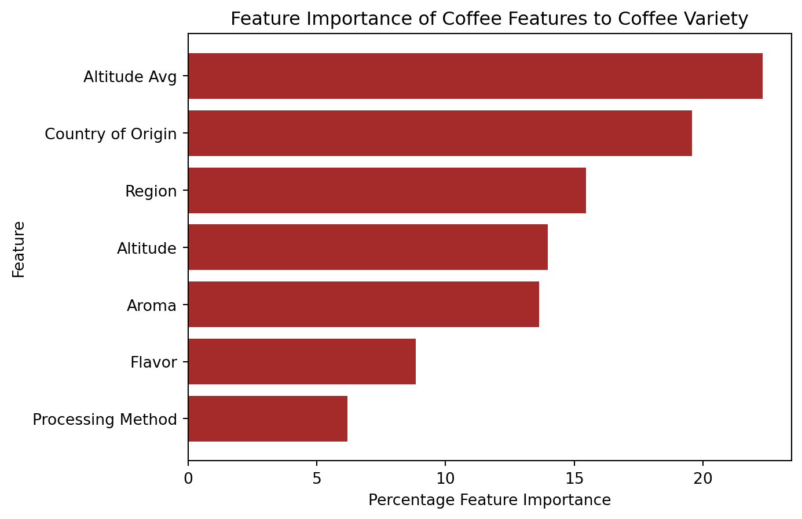
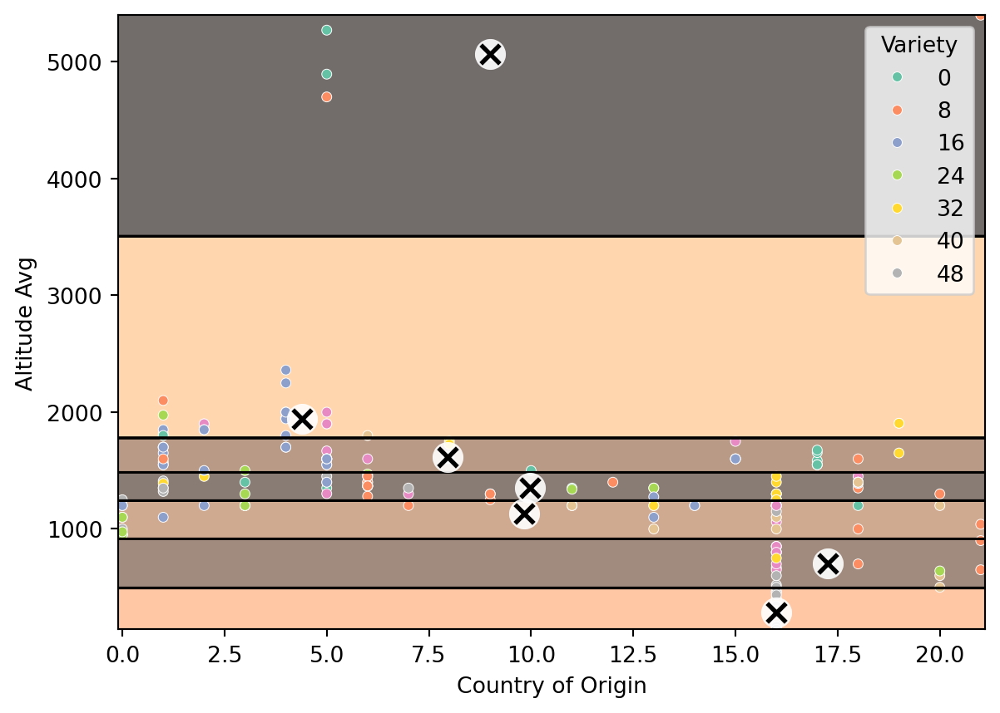
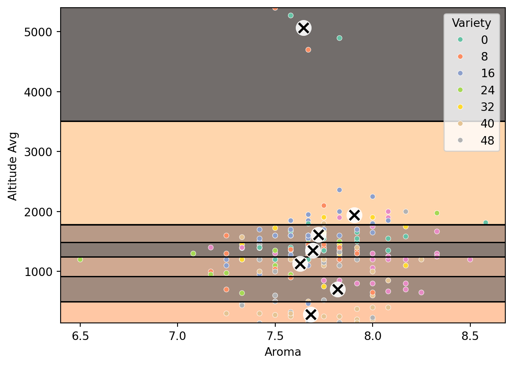

As an avid coffee drinker, I have always been impressed by people who can give a cup of black coffee a good sniff and tell you exactly where it was grown or the bean variety. I want to know if a machine learning algorithm could “smell out” coffee bean variety based on several factors. Data set source: https://www.kaggle.com/datasets/fatihb/coffee-quality-data-cqi
Step 1: Import libraries and coffee dataset
Code
import matplotlib.pyplot as pltimport numpy as npimport pandas as pdimport seaborn as snsfrom sklearn.model_selection import train_test_splitfrom sklearn.impute import SimpleImputerfrom sklearn.metrics import r2_scorefrom sklearn.cluster import KMeansfrom sklearn.preprocessing import LabelEncoderfrom sklearn.ensemble import RandomForestClassifierimport recoffee_csv ='https://raw.githubusercontent.com/erica16/ml1_blogs/main/data/df_arabica_clean.csv'coffee_df = pd.read_csv(coffee_csv)
Step 2: Get familiar with the data
Before I do anything I need to know what type of data I’m dealing with here.
A lot of these columns are not related to the coffee bean itself, so I’ll want to remove those. It also appears that I will need to handle null values, even after I take out the ICO number. I’ll go ahead and pare the dataset down to just the columns that are related to the coffee beans, but before I can remove null values I need to get the Altitude values from a string type to an int type so that I can use them more accurately. I wrote a function that uses regex to pull out the int values from the Altitude string into an array of stringified ints, which I turn into ints and then average so I only have one value for each Altitude. After that, I need the categorical columns to be useable by the machine learning algorithms, so I use a label encoder to turn the categorical data into numerical data. This dataset also isn’t very big, so I use an imputer to change null values to plausible values instead of dropping rows with null values.
Code
# clean datacoffee_df_small = coffee_df[['Country of Origin', 'Altitude', 'Region', 'Variety', 'Processing Method', 'Aroma', 'Flavor']].copy()# altitude has some values that are ranges, which is not ideal because it makes it a string not an int, so we'll take the average and replace the value with thatdef get_altitude_int(alt_in): ints = re.findall(r'\b\d+\b', alt_in) int_values = [int(num) for num in ints]returnint(np.mean(int_values))altitude_no_na = coffee_df_small['Altitude'].notnull()coffee_df_small.loc[altitude_no_na, 'Altitude Avg'] = coffee_df_small.loc[altitude_no_na, 'Altitude'].apply(get_altitude_int)# turn categorical columns into numericalcoffee_df_nums = coffee_df_small.select_dtypes(include=['number'])label_encoder = LabelEncoder()for col in coffee_df_small.columns:if coffee_df_small[col].dtype =='object': # Check if column has categorical data coffee_df_nums[col] = label_encoder.fit_transform(coffee_df_small[col])imputer = SimpleImputer(strategy="median")imputer.fit(coffee_df_nums)coffee_imp = pd.DataFrame(imputer.transform(coffee_df_nums), columns=coffee_df_nums.columns)print(coffee_imp.info())
Step 4: Cleaning is done, time to investigate feature importance
I am going to use a random forest classifier to determine what features are most relevant to predicting coffee variety.
Code
# do random forest to find out what the most important features arecoffee_enc_copy = coffee_imp.copy()train_set_X, test_set_X, train_set_y, test_set_y = train_test_split(coffee_enc_copy.drop('Variety', axis='columns'), coffee_enc_copy['Variety'], test_size=0.2, random_state=42)rnd_clf_coffee = RandomForestClassifier(n_estimators=500, max_leaf_nodes=16, n_jobs=-1, random_state=42)rnd_clf_coffee.fit(train_set_X, train_set_y)# look at the relationshipfeature_importances = pd.Series(rnd_clf_coffee.feature_importances_, train_set_X.columns).sort_values()plt.barh(feature_importances.index, feature_importances.values *100, color='brown')plt.ylabel('Feature')plt.xlabel('Percentage Feature Importance')plt.title('Feature Importance of Coffee Features to Coffee Variety')plt.show()

There are a couple interesting things to note in this bar chart. The first is the order of the important features: altitude average is most important at a little over 20%, then Country of Origin at around 20%. The second is that altitude average is more important than altitude, but I created altitude average from altitude, so shouldn’t they be the same? The reason they are not is that the label encoder assumes there is no relation between the unique values in the column, so a super high altitude could be labeled 0 and a super low altitude could be labeled 207 (since that is the number of items in each column). Clearly, being able to understand that altitude is a numerical value is important to this model. With that in mind, that also means that country of origin might be less useable after being run through a label encoder than if I had found a way of imparting relative geographic location into the numerical representation of country of origin.
Step 5: Run a K-Means on the top 2 most important coffee features to variety
The top 2 features are altitude average and country of origin, so naturally we will do our K-Means clustering algorithm on those variables. I want altitude on the y axis because it is the vertical column and is a good representation of actual altitude. I will also use 7 clusters because that is how many varieties of coffee there are in this dataset.
C:\Users\Erica\AppData\Local\Programs\Python\Python312\Lib\site-packages\sklearn\cluster\_kmeans.py:1416: FutureWarning: The default value of `n_init` will change from 10 to 'auto' in 1.4. Set the value of `n_init` explicitly to suppress the warning
super()._check_params_vs_input(X, default_n_init=10)
<matplotlib.collections.PathCollection at 0x1fb83bf7740>

Step 6: Reevaluate
That chart looks… not great. One reason could be because Country of Origin was originally categorical, and the label encoder may have not done a great job. Just for fun, we’ll take the feature with the highest feature importance to variety that started out as numerical - aroma. That is how people can tell between coffee beans, lets hope the same goes for a K-Means clustering algorithm!
C:\Users\Erica\AppData\Local\Programs\Python\Python312\Lib\site-packages\sklearn\cluster\_kmeans.py:1416: FutureWarning: The default value of `n_init` will change from 10 to 'auto' in 1.4. Set the value of `n_init` explicitly to suppress the warning
super()._check_params_vs_input(X, default_n_init=10)
<matplotlib.collections.PathCollection at 0x1fb869405f0>

That does not look much better. Looks like we will need a better dataset to be able to do this, or to tweak the encoder enough that the values are more impactful.